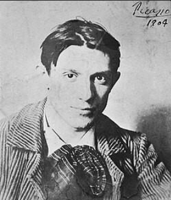

Pablo Picasso was a Spanish painter, sculptor, printmaker, ceramicist, and stage designer. He is widely considered one of the most influential artists of the 20th century. Throughout his long career, Picasso constantly experimented with new artistic styles and ideas, helping reshape the direction of modern art. Picasso is especially known for helping develop Cubism, a revolutionary style of art that changed how objects and people were represented in paintings. Instead of painting subjects realistically from a single viewpoint, Cubism broke them into geometric shapes and showed them from multiple perspectives at once. Picasso was born on October 25, 1881 in Málaga. His father, José Ruiz y Blasco, was an art teacher and painter who recognized his son’s artistic talent at an early age. Picasso began drawing and painting when he was very young, and he quickly showed extraordinary skill. According to stories about his childhood, Picasso was already producing advanced artwork by the time he was a teenager. As a young artist, he studied at art schools in Spain and later moved to Paris, which was one of the most important centers for art in the early 1900s. Living in Paris exposed Picasso to many different artists and new artistic ideas that influenced his work.
One of the most unique aspects of Picasso’s career was his constant willingness to experiment. Rather than sticking with a single style, he explored many different techniques and approaches throughout his life.
Picasso created artwork using many different forms, including: Painting, Sculpture, Printmaking, Ceramics ,Stage design for theater and ballet
Over the course of his lifetime, Picasso produced tens of thousands of artworks, including paintings, drawings, sculptures, and prints.
Blue Period (1901–1904)
During the Blue Period, Picasso created paintings dominated by cool blue and gray tones. These works often focused on themes of sadness, poverty, loneliness, and human suffering.
Many paintings from this time show people on the margins of society, such as beggars, prisoners, and the elderly.
One of the most famous works from this period is The Old Guitarist, which shows a frail, blind musician holding a guitar.

Rose Period (1904–1906)
Following the Blue Period, Picasso’s work shifted to warmer colors such as pinks, reds, and oranges. This time is known as the Rose Period.
During this period, Picasso often painted circus performers, acrobats, and entertainers. The mood of these paintings was generally lighter than his earlier works.
African-Influenced Period (1907–1909)
Around 1907, Picasso became interested in African sculptures and masks. These artworks inspired him to simplify human figures into more abstract shapes and forms.
This experimentation led directly to the development of Cubism.
Cubism (1909–1919)
Picasso helped develop Cubism along with the French artist Georges Braque.
Cubist paintings break objects into geometric shapes and show them from several viewpoints at the same time. This style challenged traditional ideas about perspective and realism in art.
Cubism became one of the most influential movements in modern art and inspired many artists around the world.
Some of Picasso's most powerful works were inspired by political events and war. During the Spanish Civil War, Picasso created one of his most famous paintings, Guernica.
This massive black-and-white mural was painted in response to the bombing of the town of Guernica. The painting shows the suffering of people and animals during war and has become a powerful symbol of protest against violence.
Pablo Picasso lived a long life and continued creating art into his later years. He died on April 8, 1973 in Mougins.
Today, Picasso is remembered as one of the most important and influential artists in history. His willingness to experiment with style and technique helped push art in new directions and inspired generations of artists.
Many of his works are displayed in museums around the world, and his paintings are among the most famous and valuable ever created.